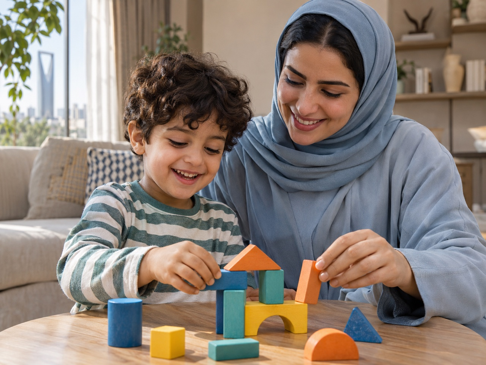

اللعب اليومي مع رفيق
رفيق شخصية جمل يوجّه الطفل في ألعاب قصيرة باللهجة الخليجية. ويتيح مدكا تكييف اللعبة والصوت ومدّة النشاط للأطفال من عمر سنتين إلى ١٠ سنوات من ذوي التوحّد أو تأخّر النطق أو اضطراب فرط الحركة وتشتّت الانتباه.
شاهد مثالًا على اللعب في مدكاكيف يجري النشاط؟
الترحيب والسؤال عن الحال
يسلّم رفيق على الطفل ويسأله عن شعوره. ويقدر الطفل يرد باختيار صورة من دون قراءة أو كتابة.
اختيار لعبة قصيرة
يختار رفيق لعبة مرتبطة بهدف حالي، ويعطي توجيهًا واحدًا في كل مرة. ويأخذ التطبيق اهتمامات الطفل وأنشطته الأخيرة في الحسبان.
التدرّب على وتيرة الطفل
يلعب رفيق مع الطفل ويشجّعه بصوته. وإذا احتاج الطفل استراحة، يقدر يوقف اللعبة ويستخدم ركن الهدوء.
ختام النشاط ومشاركة الملخّص
يحصل الطفل على نجوم مقابل محاولاته. ويقدر مقدّم الرعاية يطّلع على ملخّص لمزاج الطفل وما نجح فيه وما كان صعبًا عليه.

يوضّح المثال كيف يتدرّب الطفل على الطلب باختيار صورة، وكيف تظهر ملاحظة قصيرة في خارطة النمو.
المهارات التي تدعمها الألعاب
- التواصل
- في لعبة «أبي»، يقدر الطفل يطلب اللي يبيه بصورة أو صوت أو إشارة أو كلمة. وتساعد أنشطة أخرى على تسمية الأشياء وتقليد الأصوات.
- النظر والانتباه
- تستخدم لعبة «انظر لي» عبارات قصيرة للتدرّب على الانتباه عند النداء. ويوضّح مدكا أن ملاحظة الانتباه بالكاميرا أثناء النشاط اختيارية.
- المشاعر
- تعرّف لعبة «الوجوه» الطفل على المشاعر، وتتيح له التعبير عن شعوره باختيار صورة.
- تنظيم المشاعر
- يوفّر ركن الهدوء استراحة هادئة فيها نشاط بالبالون. ويمكن إضافة ما يساعد الطفل على الهدوء إلى ملفه.
- التعلّم
- تقدّم «الألوان والأرقام» أنشطة قصيرة يمكن تكرارها، ويرتبط كل نشاط بهدف تعلّمي.
- الروتين في البيت والمدرسة
- يوضّح التطبيق أن للجلسات بداية ونهاية مألوفتين للطفل. وتساعد أنشطة البيت وملاحظات الصف في تحديث خارطة النمو نفسها.
كيف يكيّف مدكا الأنشطة؟
يشوف الطفل النشاط والخيارات المصوّرة والنجوم. ويقدر الكبار يراجعون الملاحظات والتقدّم في واجهاتهم. ويمكن للأسرة ضبط مدّة النشاط والكلمات التي يتدرّب عليها الطفل والمكافآت وما يساعده على الهدوء.
واجهة الكبار متوفرة بالعربية والإنجليزية. ويتحدّث رفيق مع الطفل باللهجة الخليجية بحسب وصف مدكا.
المصدر دليل مزايا تطبيق مدكا
